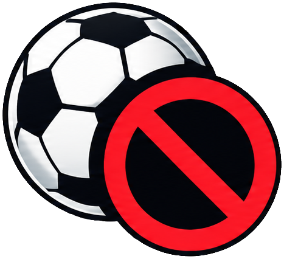
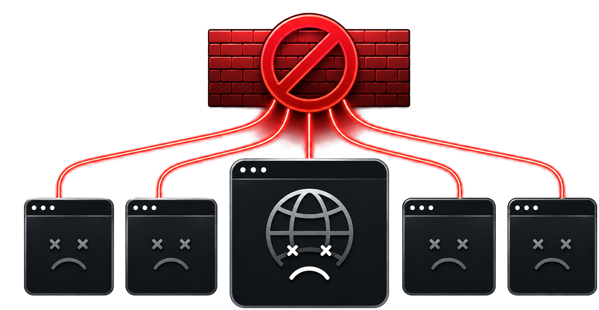
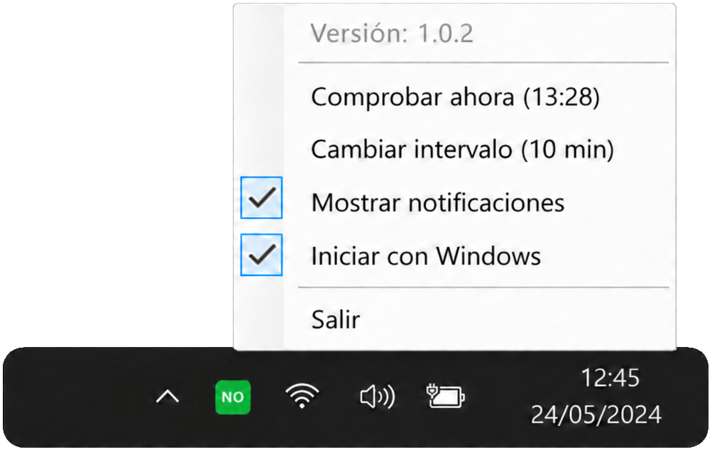

Te avisa
Detecta cuándo hay bloqueos de LaLiga que pueden dejar webs inaccesibles desde tu operador de internet.

Tebloqueo
Si se cae media internet, que no te pille por sorpresa.
Avisos claros desde Windows
Tebloqueo te avisa cuando los bloqueos de LaLiga pueden dejar webs inaccesibles desde los principales ISP españoles.
Si una página falla, quizá no seas tú; puede ser el momento de activar la VPN.
Comprobando la última versión…


Detecta cuándo hay bloqueos de LaLiga que pueden dejar webs inaccesibles desde tu operador de internet.
Te indica que los fallos pueden deberse a los bloqueos de LaLiga y no a tu conexión o al sitio web.
Si hay bloqueo, te recuerda que activar la VPN puede ser la solución para recuperar el acceso a internet.